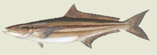

Background
Known by many names around the world, the cobia is a large, torpedo-shaped finfish that is fairly common in temperate seas and shallow, open-water habitats. A coastal migrant, the cobia also is found, usually in summer, in the deeper waters of the Pamlico Sound into the Atlantic Ocean and is often caught there for sport. It is an opportunistic predator, feeding chiefly on crabs, squid and a variety of small pelagic or benthic fishes. Although it is often a solitary feeder, the cobia may occasionally be found swimming in small schools.
Carl Linnaeus catalogued the cobia originally in 1766, first under the Latin name Gasterosteus canadus, a name that he later revised. Now Rachycentron canadum is known by many common names such as crab-eater (after its favorite food), kingfish, lemonfish, ling, sergeant fish, bonito, black bonito or prodigal son.
The cobia has a flattened, broad head and lower jaw that protrudes beyond its large mouth. A row of seven or eight sharp, stiff, distinct spines extend just forward of its long dorsal fin. It is a large, powerful fish that may reach an adult length of 2 meters (6'7") and more than 110 pounds. Its cylindrical body is usually dark brown with silver bands and a gray or yellowish underbelly. Its scales are small and give the fish a smooth appearance. From the side a cobia may be taken for a remora; its jaws, the roof of its mouth and tongue, contain bands of tiny teeth.
The cobia prefers subtropical to tropical waters (usually between 68-86 degrees), and in the western Atlantic its range extends north to Nova Scotia (though it is rarely found off Massachusetts) and south to Argentina. It is particularly abundant in the temperate waters off the U.S. coast, from the Chesapeake Bay to the Gulf of Mexico.
Life Cycle
Cobia release planktonic eggs from April to September (in estuarine or shelf waters), which collect near the surface and usually hatch within 24 hours of fertilization. After spawning, in autumn and winter, cobia usually swim south to warmer offshore waters, often south of Florida and the Keys, where they may find shelter in coral reefs and old wrecks. In early spring cobias migrate north along the Atlantic coast, and return to our local waters, where 3- to 4-foot cobia, weighing up to 70 pounds, are caught.
Cobia are rapidly growing fish-females in the Hatteras region reach sexual maturity at 2 years, which is a year earlier than females in other region-and live a relatively long time. They usually reach a maximum age of 13 years on the eastern mid-Atlantic coast. While they are generally considered to be solitary fish, sometimes schools of up to 100 fish may be seen hunting during shallow-water migrations. Like remoras, they also will follow sharks, rays or turtles as they feed, in order to scavenge other animals' catch. Cobia are prized as exciting game fish and considered an excellent fish to eat.
|
|